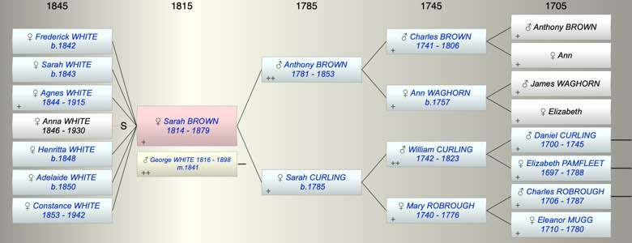

| [Index] |
| Sarah BROWN (1814 - 1879) |
|  |

|
| b. 26 May 1814 at City of London |
| m. 29 Apr 1841 George Frederick WHITE (1816 - 1898) at Clapham |
| d. 03 May 1879 aged 64 |
| Parents: |
| Anthony BROWN (1781 - 1853) |
| Sarah CURLING (1785 - ) |
| Children (6): |
| Frederick A WHITE (1842 - ) |
| Sarah S WHITE (1843 - ) |
| Agnes WHITE (1844 - 1915) |
| Henritta WHITE (1848 - ) |
| Adelaide WHITE (1850 - ) |
| Constance Lucy WHITE (1853 - 1942) |
| Events in Sarah BROWN (1814 - 1879)'s life | |||||
| Date | Age | Event | Place | Notes | Src |
| 26 May 1814 | Sarah BROWN was born | City of London | Note 1 | ||
| 29 Apr 1841 | 26 | Married George Frederick WHITE (aged 24) | Clapham | Note 2 | |
| 1842 | 28 | Birth of daughter Frederick A WHITE | St John, Westminster | ex 1851 census | |
| 1843 | 29 | Birth of daughter Sarah S WHITE | St John, Westminster | ex 1851 census | |
| 18 Sep 1844 | 30 | Birth of daughter Agnes WHITE | St John, Westminster | ||
| 1848 | 34 | Birth of daughter Henritta WHITE | ex 1851 census | ||
| 1850 | 36 | Birth of daughter Adelaide WHITE | St John, Westminster | ex 1851 census | |
| 15 May 1853 | 38 | Death of father Anthony BROWN (aged 72) | Battersea, London | Note 3 | |
| 06 Oct 1853 | 39 | Birth of daughter Constance Lucy WHITE | |||
| 03 May 1879 | 64 | Sarah BROWN died | Note 4 | ||
| Personal Notes: |
| 1851 census b St Lukes Finsbury |
| Created on a Mac™ using iFamily for Mac™ on 8 Oct 2023 |